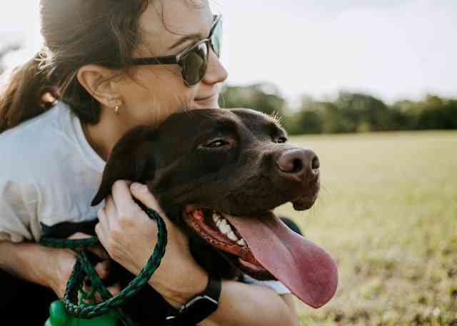

TOP
メッセージ
人と動物の幸せといのちをつなぐ私たちの活動
アジャストペットファーストは犬の殺処分をなくすことを目指して活動しています。
私たちのところには、人に可愛がられたことがない犬や捨てられた犬、障害がある犬など、
さまざまなワンコたちが保護されてきます。
そのワンコたちに愛情を注ぎ、世話をしてトレーニングをおこない、新しい里親さんの元へ送り出します。
人への信頼をなくしていた彼らが心を開いてくれたり、卒業して幸せになるのをみると感動とやり甲斐を感じます。
毎日、ワンコたちから沢山のことが学べます。
保護・譲渡活動を通じて、「殺処分ゼロ」の実現を目指しています。
保護したワンコを、里親さんとマッチング、幸せな暮らしへとつなぐこと。
 弊社にやってくる犬たちは、 野犬が多く人に慣れていないため、検疫施設を出た犬たちはシェルターに移り、散歩やスタッフとの触れ合いを通して、人に慣れていきます。
アジャストペットファーストの保護活動紹介動画
私たちは、愛護センターで殺されてしまう犬を引き取り、保護犬の幸せをサポートします。保護犬に医療ケアやトレーニングを施し、終生家族として共に生きていただける里親を探し、マッチングを行うことで、ワンコそして関わる人たちにも、幸せな未来をつくりたいと考えています。